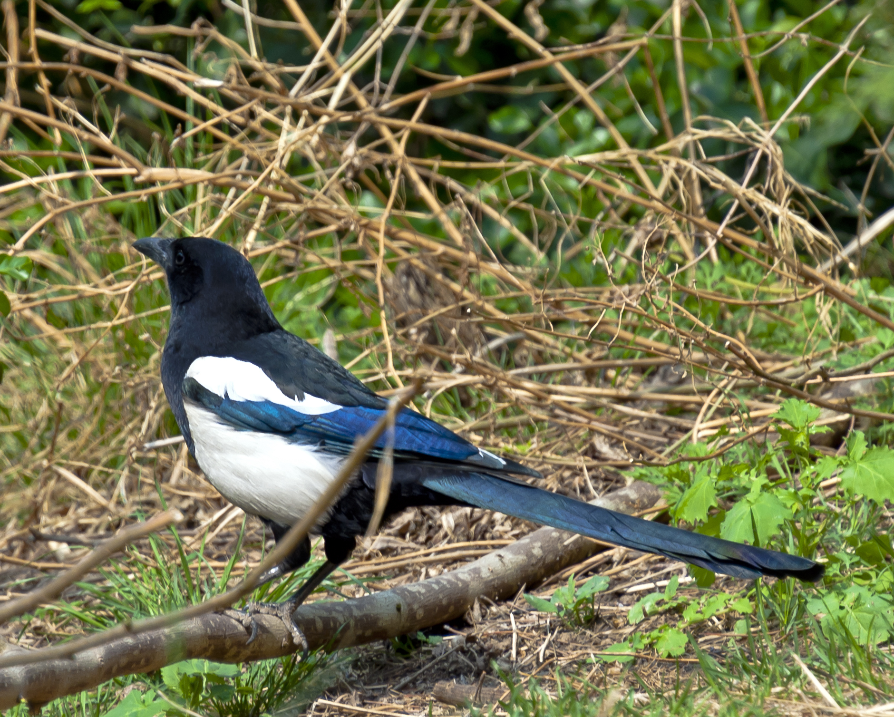

第 7 章
喜鹊的都市兵法
十字路口的信号灯由红转绿，车流启动。一只喜鹊从中央绿带的银杏树上俯冲而下，在距离最近一辆出租车前保险杠不到两米处掠过，翅膀几乎擦过地面，却在下一刻精准地落在对向车道的空隙里。它没有

喜鹊的都市兵法：历史出版插图
图源：维基共享资源 · Daniel Case · CC BY-SA 3.0
停顿，连续跳跃两次，穿过非机动车道，跳上路边的垃圾桶边缘。整套动作耗时不到四秒。
如果你在同一个路口观察足够久，会发现喜鹊穿过马路的方式与麻雀截然不同。麻雀采取群体策略，一群同时起飞，以数量换取个体安全概率。珠颈斑鸠则选择等待，等到车流完全中断才笨拙地扑腾过去。喜鹊独自行动，却比任何集群更精确。它会停在枝头或信号灯横杆上，头部微微偏转，一侧眼睛对准来车方向，停顿几秒，然后行动。那几秒的停顿，是它在读交通。
鸦科鸟类拥有鸟类中相对脑容量最大的大脑，脑化指数接近灵长类。喜鹊（Pica pica）在鸦科中又属认知能力突出的物种——它是目前已知唯一通过镜像测试的非哺乳动物。2008年，法兰克福歌德大学的研究者在喜鹊喉部点上彩色标记，将其放到镜子前。喜鹊看到镜像后，不是像大多数动物那样将其误认为同类而发起攻击或求偶，而是反复转头、用爪子抓挠标记部位，试图去除那个只有通过镜子才能看到的色点。这个行为意味着它理解镜像中的影像就是自己——一种被视为自我意识行为指标的认知能力。
但城市喜鹊不需要镜子来证明自己聪明。它们每天穿越的路口就是考场。
在北京海淀区中关村大街与知春路交叉口，2017年至2019年间，一位退休的鸟类学爱好者用笔记本记录了超过四百次喜鹊横穿马路的观察。他的记录显示，喜鹊穿越时选择的时机与信号灯周期高度相关——不是简单地等到红灯车辆停止，而是利用左转车辆与直行车辆之间的时间差。当左转车流结束、直行车流尚未加速的瞬间，窗口期通常只有三到五秒。喜鹊的行动几乎总是踩在这个窗口的中点。这份未正式发表的观察笔记，后来被北京大学城市与环境学院的一位研究生引用在硕士论文中，成为城市鸟类行为可塑性研究的案例。
读懂交通只是喜鹊城市生存技能的一个侧面。更关键的是它们对人类的个体识别能力。
韩国首尔国立大学的研究团队在2011年至2013年间进行了一项实验。研究人员穿着两种不同颜色的外套进入喜鹊巢区——一种颜色的穿着者此前曾接近巢树并做出攀爬动作，另一种只是路过。结果，曾遭受威胁的喜鹊对特定颜色外套的穿着者发出警报鸣叫，并在其再次接近时发起俯冲攻击，而对另一种颜色则保持沉默。更关键的是，当研究人员交换外套后，喜鹊仍然攻击原来那批人——它们识别的是人脸，不是衣服。这项发表在《动物认知》期刊上的研究结论明确：喜鹊能够识别并记住特定人类个体的面部特征，记忆持续时间超过一个月。
在城市环境中，这种能力被反复激活。小区里经常投喂它们的居民、曾经驱赶过它们的保安、拿着捕网出现过的研究人员——喜鹊记得。它们不是对所有人类一视同仁，而是建立了差异化的个体档案。
这种精细的社会认知，在喜鹊的种内生活中同样发挥作用。喜鹊是一夫一妻制鸟类，配对后通常维持终生。繁殖季节，成对喜鹊占据并保卫领域，驱逐入侵的同种个体。领域边界不是随意划定的，而是通过反复的边界对峙和鸣叫交流维持的。如果你在春天的清晨听到喜鹊发出急促而响亮的“恰——恰——恰——”声，那很可能是一场领域纠纷正在发生。
到了秋季，领域性会暂时消解。未参与繁殖的亚成鸟和繁殖失败的成鸟聚集成群，有时达到三四十只的规模。这些秋群在行为生态学上被视为信息交换中心——年轻个体通过观察年长个体的觅食地点和取食技巧来学习。鸦科研究者将这种现象称为“社会学习”，并认为它是喜鹊适应城市环境的关键机制之一。一只喜鹊发现某个垃圾桶有稳定食物来源，其他喜鹊很快也会知道。一只喜鹊学会拆开牛奶包装盒的封口，这个技巧会在群体中扩散。
然而，集群也带来了与人类最直接的冲突：噪音。秋季黎明前的集群喧哗，是城市居民投诉喜鹊的首要原因。在北京、上海、南京等多个城市，每年九月至十一月间，关于喜鹊噪音的投诉会出现季节性高峰。投诉内容高度一致：清晨四五点开始，几十只喜鹊聚集在小区树上“喳喳”大叫，持续约一小时。
从喜鹊的角度看，这种行为有其适应性逻辑。集群喧哗通常在黎明前开始，这个时间选择并非偶然——它是群内个体确认彼此存在、协调当日活动区域的一种社会信号。在自然环境中，这种喧哗有助于维持群体凝聚力和信息共享。问题在于，城市中的喜鹊集群地点常常与居民楼高度重叠，而城市居民对清晨噪音的容忍度远低于乡村。这种冲突指向一个更深层的矛盾：喜鹊的成功策略——接近人类、精细阅读人类行为、利用人类创造的环境结构——同时也将它们推入与人类最频繁的摩擦之中。
要理解这种摩擦的根源，需要回到喜鹊筑巢这个更基础的层面。
城市喜鹊的巢，从外观上看与乡村喜鹊的巢没有本质区别：球形或卵形结构，由树枝搭建骨架，内衬泥土和细草，侧面开口。但如果你有机会在冬季落叶后近距离检查一个城市喜鹊巢的内部，会发现材料清单发生了显著变化。传统的喜鹊巢材包括柳枝、杨树枝、藤蔓、草茎、泥土、动物毛发。城市巢的清单则增加了铁丝、塑料绳、尼龙绳、晾衣架碎片、电线外皮、玻璃纤维隔热棉、塑料袋条、口罩耳绳。
2020年，南京林业大学的研究者收集并分析了南京市区的十七个喜鹊废弃巢，在巢材中识别出超过四十种人造材料。其中出现频率最高的是铁丝，出现于十四个巢；塑料绳出现于十五个巢。有些巢的铁丝含量占巢材总重量的百分之十五以上。
喜鹊为什么选择这些材料？答案与功能有关。喜鹊巢的树枝骨架需要用柔软材料缠绕固定，在自然环境中它们使用藤蔓和长草茎。铁丝和塑料绳在物理性能上更优越——强度更高、更耐腐蚀、可塑性更强。一只喜鹊用喙将铁丝绕在交叉的树枝上，然后用力拧紧，这个动作与人类用钳子拧铁丝在力学上完全一致。它们的喙不是简单的夹取工具，而是一个能够施加精确压力和扭矩的操作器。
但人造材料也带来风险。塑料绳在阳光下会老化变脆，失去绑缚力。铁丝可能生锈断裂。更危险的是，某些颜色鲜艳的塑料条在巢外飘荡，增加了巢被天敌发现的概率——虽然城市中喜鹊的主要天敌数量有限，但流浪猫和人为破坏仍然是威胁。
这里出现了一个演化上的微妙问题：喜鹊对人造材料的选择，是适应性行为还是生态陷阱？适应性解释认为，喜鹊主动选择了性能更优的材料，提高了筑巢效率和巢体耐久性。生态陷阱解释则认为，人造材料的短期优势掩盖了长期风险，喜鹊被表面利益吸引而做出了降低繁殖成功率的选择。
目前的研究证据倾向于支持适应性解释，但有重要的限定条件。南京林业大学的研究同时追踪了使用高比例人造材料的巢和传统材料巢的繁殖成功率，发现两者之间没有显著差异——至少在观察期内如此。但研究者也承认，人造材料的长期风险，如塑料降解产生的微塑料对雏鸟的影响，尚未得到充分评估。这种不确定性，正是城市鸟类研究中反复出现的主题：我们观察到的“成功”，在演化的时间尺度上可能只是暂时的适应，也可能是一个陷阱的入口。
代价之一是警戒距离的变化。
警戒距离，指鸟类在察觉到潜在威胁时允许其接近的最小距离，被广泛用于衡量鸟类对人类干扰的耐受程度。通常来说，城市鸟类比乡村同种的警戒距离更短——它们允许人类靠得更近才起飞。但喜鹊的数据出现了有趣的模式。
波兰华沙大学的研究者在2014年至2016年间测量了城市和乡村喜鹊的警戒距离。结果不出所料，城市喜鹊的平均警戒距离约八米，显著小于乡村喜鹊的约十八米。但研究者进一步分析了城市内部不同建成环境密度下的差异，发现了一个非线性关系：在中等密度城区，如低层住宅区、公园周边，喜鹊的警戒距离最短，约六米；而在高密度城区如商业中心、交通枢纽，以及乡村，警戒距离反而更长。
研究者的解释是：中等密度城区提供了喜鹊最适应的“界面生境”——既有足够的绿地和食物，又有适度的人类活动提供保护和额外食物来源。在这种环境中，喜鹊学会了精确评估风险，不会对每一个路过的人类做出过度反应。而在高密度城区，过多的行人和车辆使得风险评估变得困难，喜鹊反而采取了更保守的策略。
这个发现揭示了一个容易被忽略的事实：喜鹊的“适应”不是简单地缩短警戒距离，而是发展出了一种更精细的风险评估能力。它们不是变得更“大胆”，而是变得更“准确”。这种准确性依赖于对环境的持续学习。一只新迁入城市的喜鹊不会立即表现出缩短的警戒距离——它需要时间来学习哪些人类行为是威胁、哪些不是。这个过程可能需要数周甚至数月。在此期间，它会犯错误：对无害行为过度反应，或者对真实威胁反应不足。前一种错误浪费能量，后一种错误可能致命。
学习过程中的错误，在喜鹊与人类的关系中留下了最激烈的痕迹：攻击事件。
澳大利亚的澳大利亚喜鹊（Gymnorhina tibicen，虽名“喜鹊”但属钟鹊科）在繁殖季节的攻击行为尤为著名，每年春季都有骑自行车者被俯冲攻击导致受伤的报道。欧亚喜鹊（Pica pica）的攻击行为通常没有那么激烈，更多表现为警告性的俯冲和鸣叫，但在中国城市中确实存在。
2019年5月，北京市海淀区某小区连续发生多起喜鹊攻击居民的事件。根据小区物业的记录和业主群的描述，一对喜鹊在该小区中心花园的槐树上筑巢后，开始对经过巢树下方的行人发起俯冲攻击。攻击对象没有明显的年龄或性别选择，但戴帽子或撑伞的人似乎更容易被攻击——这可能是因为喜鹊将举过头顶的物体视为威胁信号。
物业最初试图移除鸟巢，被部分业主阻止。随后物业在树下设置了警示牌，提醒居民绕行。但攻击范围逐渐扩大，从巢树正下方扩展到半径约十五米的区域。有业主在业主群中描述：“它从后面冲过来，爪子抓了一下我的头发，我回头的时候它已经飞回树上了。不是特别疼，但很吓人。”另一位业主则称被啄到了耳朵，有轻微出血。
这起事件最终以繁殖季结束、幼鸟离巢后攻击行为自然消退而结束。但它留下了持续的争议：一部分业主认为应该清除“危险”的喜鹊巢，另一部分则认为这是人类侵占鸟类栖息地的必然代价。小区业委会的会议记录显示，该议题在2019年6月至七月间被讨论了三次，未能达成一致意见。
并非所有喜鹊巢都会引发攻击行为。研究者发现，攻击行为的发生频率与巢址选择密切相关：建在人流量大的路径上方的巢，攻击行为更频繁；而建在相对僻静处的巢，即使距离人类活动区域很近，也可能完全不表现出攻击性。这个模式再次指向了喜鹊的风险评估能力——它们不是对所有接近巢的人类都做出攻击反应，而是根据具体情境做出判断。问题在于，当巢址选择本身出现了“错误”，建在了人流密集处，后续的攻击行为就成了不可避免的冲突。
巢址选择，是喜鹊城市策略中最具决定性的环节之一。
在自然环境中，喜鹊偏好在高大乔木的中上部筑巢，巢树通常位于林地边缘或开阔地带，提供良好的视野和飞行通道。城市环境提供了大量等效结构：行道树、小区绿化乔木、公园孤立大树、高压电塔、信号塔。高压电塔和信号塔的使用，是“悬崖代偿”概念在喜鹊身上的扩展。原本依赖悬崖、岩洞等自然垂直结构筑巢的鸟类，在城市中将高层建筑、桥梁等人工垂直面识别并转化为等效生境。喜鹊的电塔巢则将这个概念从垂直面扩展到了线状人工结构。电塔提供了比自然乔木更高的结构强度、更少的捕食者通道，以及可能最重要的——更少的种间竞争。大多数鸟类不会选择电塔筑巢，喜鹊在这里几乎没有竞争者。
但电塔巢也有代价。电磁场的长期影响尚未充分研究。更直接的风险是电力公司的清理。在输电线路安全维护中，鸟巢被视为潜在故障点，定期清理是标准操作。一只喜鹊花费数周搭建的电塔巢，可能在一个下午就被清除。这种不可预测的干扰，对喜鹊的繁殖成功率构成了真实威胁。
喜鹊对此的应对策略，又回到了它们最核心的能力上：快速学习。研究者在跟踪电塔巢的命运时发现，那些曾经被清理过巢的喜鹊，在重新筑巢时会选择同一电塔的不同位置——通常是在更难被检修人员到达的角落。有些甚至会改变巢的朝向，使其从地面视角更隐蔽。这不是本能反应，而是个体学习的结果。
一个模式到这里应该已经清晰了：喜鹊的城市成功，建立在行为弹性上。它们没有像麻雀那样演化出对人类食物垃圾的代谢适应，没有像雨燕那样特化出在建筑缝隙中飞行的身体结构，没有像珠颈斑鸠那样通过不挑剔来扩大生态位。喜鹊的答案写在神经系统里，而不是生理系统里。在鸦科这个以智力著称的家族中——从红嘴蓝鹊（Urocissa erythrorhyncha）到大嘴乌鸦（Corvus macrorhynchos），再到同属的灰喜鹊（Cyanopica cyana）——喜鹊（Pica pica）凭借其对城市界面生境的精准解读，将行为可塑性推向了极致。
这个答案有其特殊的代价。行为弹性依赖于学习和经验，而学习过程是脆弱的。一只正在学习城市规则的年轻喜鹊，比一只已经建立领域多年的成年喜鹊面临更高的死亡风险。交通、流浪猫、玻璃幕墙——这些城市压力对缺乏经验的个体尤其致命。
社会结构在一定程度上缓冲了这个代价。喜鹊的家庭结构通常包括亲鸟和当年出生的幼鸟，幼鸟在离巢后仍会跟随亲鸟数周至数月。在这段时间里，幼鸟通过观察亲鸟的行为来学习觅食地点、危险识别和社会互动。这种“文化传递”——如果我们可以借用这个人类学术语——加速了年轻个体对城市环境的适应。
但文化传递也有其局限。当环境发生快速变化时——比如一个新路口安装了信号灯，或者一个长期使用的垃圾桶被移走——整个家庭群体都可能同时面对陌生情境。在这种情况下，喜鹊的个体学习能力重新成为关键。群体中总有一些个体比另一些更大胆、更善于探索。这些“创新者”找到解决方案后，其他个体通过社会学习跟进。这个双层学习系统——个体创新加社会传播——是喜鹊城市策略的核心引擎。它解释了为什么喜鹊能够在不同的城市环境中都表现出高度的适应性：无论面对什么样的具体挑战，这套系统都能产生应对方案。
但这也引出了一个无法回避的问题：如果喜鹊如此善于学习，为什么它们没有在所有城市环境中都占据优势？为什么在某些城市——尤其是高度密集的大都市核心区——喜鹊的密度反而低于白头鹎和乌鸫？
答案在于智力策略的极限。高度密集的城市核心区有两个特征：一是绿地碎片化严重，适合筑巢的高大乔木稀少；二是人类活动密度极高，使得即使是最精确的风险评估也难以有效运作。在这样的环境中，喜鹊的学习系统面临信息过载——太多的刺激、太多的变量、太多的不可预测性。一只喜鹊不可能学会解读每一条街道的交通模式、每一个窗口可能出现的威胁、每一个行人的意图。
喜鹊的策略在“可读”的环境中最为有效。中等密度城区、老居民区、校园、公园周边——这些地方的规律性较强，人类行为有可预测的模式，喜鹊可以建立有效的认知地图。而在高密度商业区，混乱本身成为最大的压力源。
这让我们回到了开篇那个十字路口的场景。那只喜鹊能够精确穿越车流，不是因为车流是简单的，而是因为信号灯赋予了车流可预测的节奏。如果换成没有信号灯、车流连续不断的路段，喜鹊的穿越成功率会大幅下降。它们的智力不是魔法，而是一套在特定条件下才能有效运作的工具。
这套工具的边界，在人与喜鹊的冲突中暴露得最为清晰。喜鹊攻击行人、噪音扰民、翻找垃圾——这些行为从喜鹊的角度看都是适应性策略的合理延伸，但从人类的角度看则是越界。人类为喜鹊提供了城市生境，但也在持续划定边界：哪些区域可以容忍喜鹊的存在，哪些行为可以接受，多近才算太近。
边界是双向的。喜鹊也在划定自己的边界。警戒距离的变化、巢址的选择、对特定人类的识别和记忆——这些都是喜鹊在用自己的方式回答同一个问题：在这个由另一个物种主导的环境中，如何保持安全的距离？这个问题的答案不是固定的。它随着环境变化、个体经验、群体文化而持续调整。每一只城市喜鹊都在实时计算这个距离，每一次穿越马路、每一次接近人类、每一次攻击或容忍，都是计算的一部分。而计算的结果，正在塑造城市生态网络的形态。
喜鹊不是孤立的物种。它们的存在影响着其他鸟类——喜鹊是巢捕食者，会取食其他鸟类的卵和雏鸟；它们是领域竞争者，会驱赶进入领域的同种和异种个体；它们也是社会信息的提供者，其他鸟类可以通过喜鹊的警报鸣叫来判断威胁的存在。在第六章中，我们看到了珠颈斑鸠如何通过“不被注意”来占据城市生态位。喜鹊的策略正好相反：高度注意、主动学习、积极干预。这两种策略在城市中并存，各自占据不同的生态空间，彼此之间既有竞争也有微妙的共存。
喜鹊与斑鸠的对照，不只是两种鸟的对照，而是两种进化答案的对照。斑鸠的答案是被动的、耐受的、低成本的；喜鹊的答案是主动的、计算的、高成本的。斑鸠依赖生理上的广适性，喜鹊依赖行为上的可塑性。在城市这张考卷上，两个答案都及格了，但分数分布不同：斑鸠在几乎所有城市环境中都能存活，但在任何环境中都不占优势；喜鹊在特定环境中高度成功，但在另一些环境中则缺席。
这种差异，正是城市作为演化实验室的意义所在。城市不是单一的生态过滤器，而是一套复杂的、多维的选择压力组合。不同物种用不同的策略回应这些压力，每种策略都有其有效范围和代价。把它们的答案连起来看，就是一部活的城市生态史。
喜鹊的答案在这部历史中占据一个特殊的位置。在所有中国城市常见鸟类中，喜鹊可能是与人类互动最复杂、最微妙的一种。它们不是简单地避开人类或依附人类，而是试图理解人类——理解我们的行为模式、我们的注意分配、我们的容忍边界。这种理解不完全准确，有时会出错，但它的存在本身就说明了一些重要的东西：城市不只是人类的城市，它也是一个多物种共同构建的认知生态系统。在这个系统中，喜鹊是观察者、学习者和干预者。
它们看着我们，就像我们看着它们。它们从我们的行为中提取规律，用这些规律来指导自己的行动。它们记得我们的脸，评估我们的意图，在必要时发起反击。它们不是被动的城市居民，而是积极的参与者。
本章开头那只穿越十字路口的喜鹊，最终落在了路边的垃圾桶上。它在桶沿停留了几秒，低头翻找，叼出一个装过炸鸡的纸袋。然后它飞回银杏树，把纸袋按在树枝上，用喙撕开，取食里面残留的食物碎屑。整个过程不到两分钟。在这两分钟里，它完成了风险评估、路径规划、食物获取和工具使用——一系列在认知科学中被视为复杂行为能力的操作。
而在距离这棵树不到二十米的一栋居民楼里，一位早起的老人在窗前目睹了整个过程。他后来在社区微信群里写道：“那只喜鹊又来了，它已经连续一个星期在这个点翻垃圾桶。我看它比有些人还精。”这句随口说的话，恰好触及了喜鹊城市策略的核心矛盾：它们因为“精”而成功，也因为“精”而与人类产生摩擦。
2022年夏天，北京那个曾发生喜鹊攻击事件的小区，又有一对喜鹊在中心花园筑巢。这一次，物业没有试图移除鸟巢，而是在巢树周围安装了临时围栏和提示牌。部分业主仍然不满，认为围栏侵占了公共空间。业委会再次开会讨论。会议记录显示，一位业主代表提出了一个建议：“要不我们在小区里专门给喜鹊留一片地方，别让它们老往人多的地方凑？”这个建议在生物学上不可行——你无法用行政手段划定喜鹊的领域边界。但它反映了一种正在萌芽的意识：与喜鹊共存，需要的不是单方面的驱赶或容忍，而是某种形式的协商——即使这种协商目前还只是人类内部的讨论。
喜鹊已经在参与这场协商了。它们用自己的行为表达偏好、划定边界、回应威胁。它们不是被动的谈判对象，而是主动的博弈方。只是它们使用的语言不是词汇和语法，而是巢址选择、警戒距离、攻击阈值和行为适应。在城市这张考卷上，喜鹊写下的答案还在继续修改中。每一次穿越马路、每一次评估威胁、每一次与人类遭遇，都是修改的一部分。这种修改没有终点——它只是在每一个清晨，在每一个十字路口，在每一棵筑巢的树上，不断发生。
而摩擦也在累积。
2023年春季，南京市鼓楼区一个老小区内，一对喜鹊连续第三年在同一棵法桐上筑巢。前两年它们只是噪音扰民，第三年则开始攻击进出楼栋的居民。一名被啄伤耳垂的中年男性业主在业主群内发长文要求“彻底解决”，并附上了医院处理伤口的照片。物业联系了园林部门，得到的答复是繁殖期受法律保护不能移除。最终的处理方式是临时封闭单元门的一个出入口，让居民绕行侧门。这个折中方案持续了六周，直到幼鸟离巢。
六周内，业主群里的争论没有停止过。有人在群里转发喜鹊识别人类面孔的研究文章，试图解释攻击行为的成因；有人反驳说“知道它聪明又怎样，我耳朵还是被啄了”；也有人建议明年提前采取措施，“在它们开始筑巢时就赶走”。这个僵局指向了一个更大的问题：当一种鸟类的智力足以让它精细地阅读人类并据此调整行为时，人类是否也愿意付出同等的认知努力来理解它们？还是说，“聪明”这个标签只会让冲突变得更加难以容忍——因为攻击不再被视为本能反应，而是被解读为某种带有意图的行为？
喜鹊不会回答这个问题。它们只是继续在城市的缝隙中筑巢、觅食、学习、记忆。每天清晨穿越十字路口时的那几秒停顿，是它们对这个由人类主宰的世界做出的最精确的判断。
但判断也会出错。2021年秋天，北京北四环一处路口，一只亚成体喜鹊在穿越时误判了电动自行车的速度。撞击发生在非机动车道正中。骑手摔倒受了轻伤，喜鹊当场死亡。路口的监控摄像头记录下了全过程：它在枝头停顿了不到两秒就起飞了——对于一个还在学习读交通的年轻个体来说，两秒远远不够。
这个失败的案例与开篇那只精确穿越的喜鹊构成了同一枚硬币的两面。智力策略的优势在于灵活和精准，劣势在于它需要时间积累和经验试错。每一只熟练穿越马路的成年喜鹊背后，都有一定比例的年轻个体在学习过程中付出代价。城市对喜鹊来说不是天堂，也不是地狱。它是一套可以被学习的规则系统，但规则的执行没有怜悯。